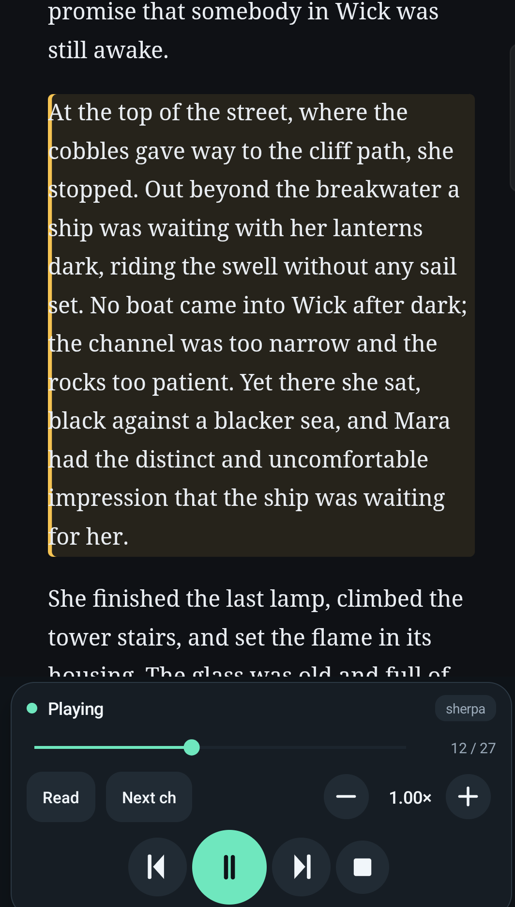

<template>
  <div data-hf-id="hf-fgu2" id="root" data-composition-id="03-reading" data-duration="5" data-width="1080" data-height="1920" data-fps="30">
    <style>
@import url("../../assets/fonts/fonts.local.css");
*, *::before, *::after { box-sizing: border-box; margin: 0; padding: 0; }

#root {
  position: absolute;
  inset: 0;
  overflow: hidden;
  container-type: size;
  isolation: isolate;
  background: transparent;
  color: #F1F6FA;
  font-family: 'Inter', sans-serif;
  pointer-events: none;
}

/* full-bleed ink ground on a clip layer */
.rd-ground {
  position: absolute;
  inset: 0;
  background:
    radial-gradient(ellipse at 18% 8%, rgba(111,231,190,0.09) 0%, rgba(111,231,190,0.02) 40%, rgba(14,19,24,0) 70%),
    #0E1318;
}

/* copy block (top third) */
.rd-label {
  position: absolute;
  left: 84px;
  top: 118px;
  font-family: 'Inter', sans-serif;
  font-weight: 500;
  font-size: 28px;
  letter-spacing: 0.28em;
  text-transform: uppercase;
  color: #6FE7BE;
  opacity: 0;
  will-change: opacity;
}

.rd-mask {
  position: absolute;
  left: 84px;
  right: 84px;
  height: 92px;
  overflow: hidden;
}
.rd-mask--1 { top: 176px; }
.rd-mask--2 { top: 268px; }

.rd-headline {
  font-family: 'Playfair Display', serif;
  font-weight: 500;
  font-size: 76px;
  line-height: 1.12;
  letter-spacing: -0.01em;
  will-change: transform;
}
.rd-headline--1 { color: #F1F6FA; }
.rd-headline--2 { color: #6FE7BE; }

.rd-tick {
  position: absolute;
  left: 84px;
  top: 404px;
  width: 96px;
  height: 2px;
  background: #F4C66A;
  transform-origin: left center;
  opacity: 0;
}

/* real reader plate — highlight paragraph + live player */
.rd-plate {
  position: absolute;
  left: 130px;
  top: 470px;
  width: 820px;
  border: 1px solid #2C3944;
  border-radius: 24px;
  overflow: hidden;
  background: #161D24;
  transform-origin: 50% 40%;
  will-change: transform, opacity;
}
.rd-plate img {
  display: block;
  width: 100%;
  height: auto;
}
.rd-plate-glow {
  position: absolute;
  left: 92px;
  top: 600px;
  width: 896px;
  height: 680px;
  background: radial-gradient(ellipse at 50% 45%, rgba(111,231,190,0.16) 0%, rgba(244,198,106,0.06) 45%, rgba(14,19,24,0) 74%);
  filter: blur(24px);
  pointer-events: none;
}
    </style>

    <div data-hf-id="hf-fwdb" id="rd-ground" class="rd-ground clip" data-start="0" data-duration="5" data-track-index="0"></div>
    <div data-hf-id="hf-lohd" class="rd-plate-glow"></div>

    <div data-hf-id="hf-g7ad" class="rd-label clip" id="rd-label" data-start="0" data-duration="5" data-track-index="1">ONE TAP · ANY CHAPTER</div>

    <div data-hf-id="hf-bm8n" id="rd-mask-1" class="rd-mask rd-mask--1 clip" data-start="0" data-duration="5" data-track-index="2">
      <div data-hf-id="hf-0xrn" class="rd-headline rd-headline--1" id="rd-h1">It reads the chapter.</div>
    </div>
    <div data-hf-id="hf-5vbo" id="rd-mask-2" class="rd-mask rd-mask--2 clip" data-start="0" data-duration="5" data-track-index="3">
      <div data-hf-id="hf-bvzy" class="rd-headline rd-headline--2" id="rd-h2">Follows every word.</div>
    </div>
    <div data-hf-id="hf-z7uf" class="rd-tick clip" id="rd-tick" data-start="0" data-duration="5" data-track-index="4"></div>

    <div data-hf-id="hf-2y1n" class="rd-plate clip" id="rd-plate" data-start="0" data-duration="5" data-track-index="5" data-layout-allow-overflow>
      
    </div>

    <script src="https://cdn.jsdelivr.net/npm/gsap@3.14.2/dist/gsap.min.js"></script>
    <script>
      (function () {
        "use strict";
        var plate = document.getElementById("rd-plate");
        var label = document.getElementById("rd-label");
        var h1 = document.getElementById("rd-h1");
        var h2 = document.getElementById("rd-h2");
        var tick = document.getElementById("rd-tick");

        gsap.set(h1, { yPercent: 100 });
        gsap.set(h2, { yPercent: 100 });
        gsap.set(label, { opacity: 0 });
        gsap.set(tick, { scaleX: 0, opacity: 0 });
        gsap.set(plate, { y: 70, opacity: 0, scale: 1.05 });

        var tl = gsap.timeline({ paused: true });

        // 0.0-1.1 plate rises + settles
        tl.to(plate, { y: 0, opacity: 1, scale: 1, duration: 1.1, ease: "expo.out" }, 0);

        // label 0.2; headline 1 at 0.9; amber tick 0.9
        tl.to(label, { opacity: 1, duration: 0.5, ease: "power3.out" }, 0.2);
        tl.to(h1, { yPercent: 0, duration: 0.8, ease: "power3.out" }, 0.9);
        tl.to(tick, { opacity: 1, scaleX: 1, duration: 0.55, ease: "power3.out" }, 0.9);

        // headline 2 at 2.3
        tl.to(h2, { yPercent: 0, duration: 0.8, ease: "power3.out" }, 2.3);

        // 2.6-4.3 one slow decelerating push on the plate; type holds still
        tl.to(plate, { scale: 1.035, duration: 1.7, ease: "power2.out" }, 2.6);

        tl.seek(0);
        window.__timelines = window.__timelines || {};
        window.__timelines["03-reading"] = tl;
      })();
    </script>
  </div>
</template>
